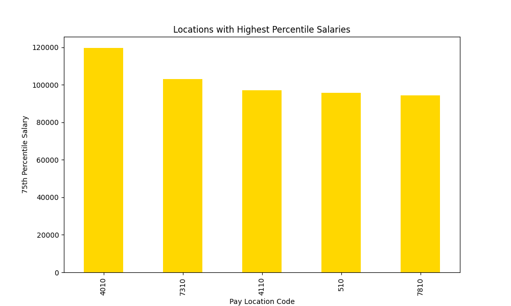

Objective
Utilizing data from City-Parish Employees and Python libraries such as Pandas, Matplotlib, and Seaborn, I conducted an in-depth analysis to uncover trends, including salary distributions, hiring patterns, and other insights.
Data from: https://catalog.data.gov/dataset/city-parish-employees
Prompts (Charts Below)
What is the distribution of employee salaries? Jump to Chart
Does years of service play a role in salary? Jump to Chart
Does pay location code affect salary? Jump to Chart
How has salary changed over time? Jump to Chart
Are there locations with a higher percentile of salaries? Jump to Chart
Which locations have the least scheduled hours? Jump to Chart
Which locations have the most scheduled hours? Jump to Chart
Does scheduled hours play a role in salary? Jump to Chart
What is the correlation between salary and other numerical columns? Jump to Chart
What are the hiring trends over the years? Jump to Chart
Visualizations
Salary Distribution

Years in Service and Salary
Pay Location and Salary
Salary over Time
Locations with Highest Salaries
Locations with Least Scheduled Hours
Locations with Most Scheduled Hours
Scheduled Hours and Salary
Correlation Heatmap
Hiring Trends
Summary: What does this tell us?
Through this analysis of City-Parish salaries, we've uncovered a few trends in the data. The average salary in this city is roughly $50,000 which is $13,795 less than the national average in the United States as of 2024. Though this is the case, the information is skewed because of the significant number of residents who have an income of 0. We've also uncovered that in that salary, hours don't have a strong impact on salary. Which indicates there are other factors that contribute to salary. One of which is years of service, there is a high reflection of the more years put in, the higher the salary. Another one of which is pay location, there is a lot of variation between locations. Other than salary correlations, we've also uncovered hiring trends. The data highlights that as time went on there is a decline in people being hired which could indicate different departmental initiatives or different payroll systems.